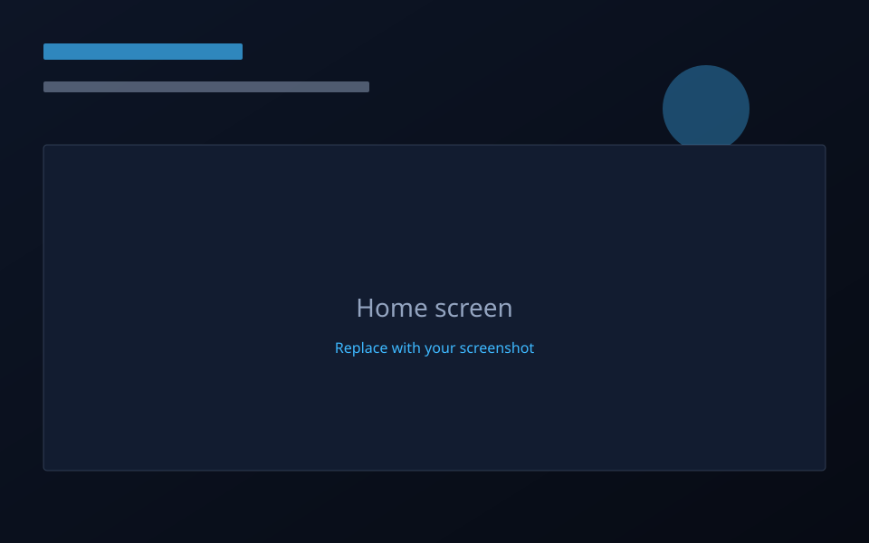
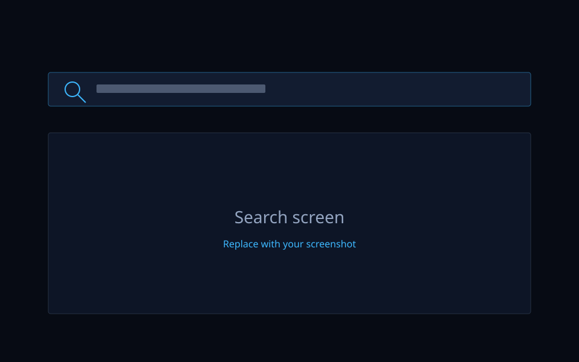
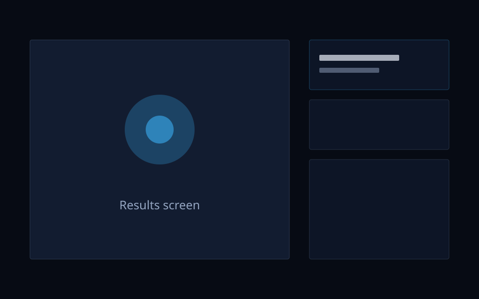
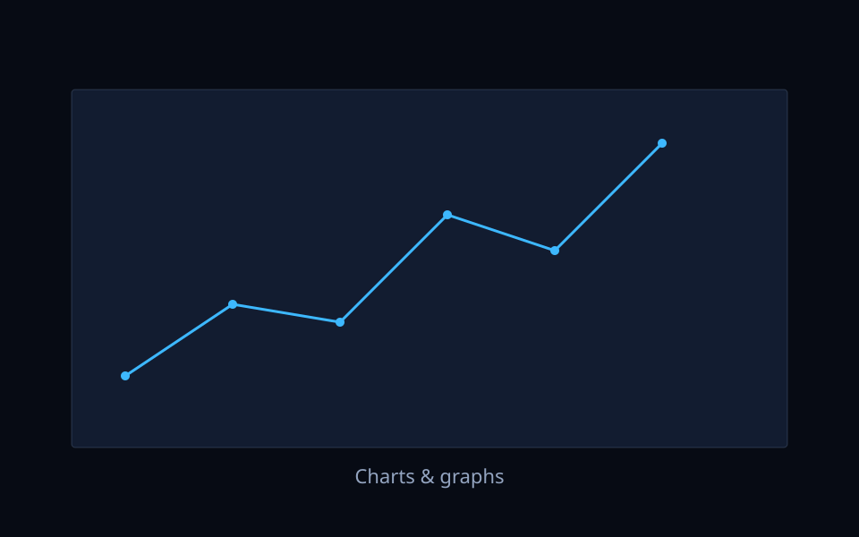

Home / Projects / Astronomy
Astronomy Observation System
An AI-powered astronomy application that identifies planets, stars, and asteroids, analyzes astronomical data, and predicts celestial object positions using astronomical calculations.
Technologies
- Python
- AI
- OpenCV
- NASA API
- Machine Learning
- SQLite
Features
- Planet identification
- Asteroid detection
- Celestial object tracking
- Orbital prediction
- Interactive sky visualization
- Data analysis dashboard
Images




Demo Video
Add your demo video
Place a 1–2 minute clip at
assets/videos/astronomy-demo.mp4